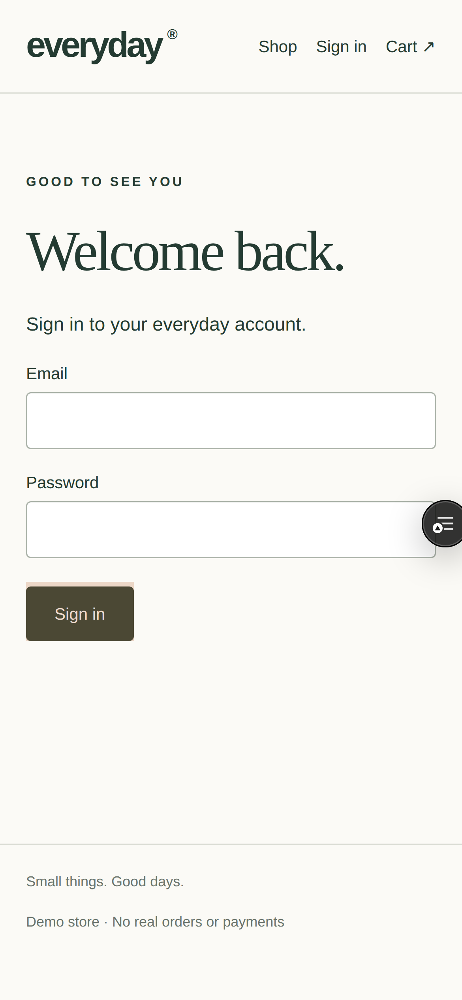
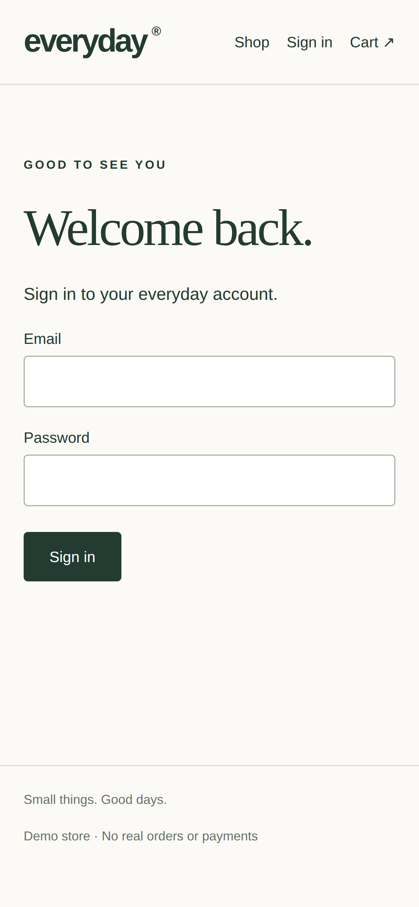

CodeRabbit reviews your code.
TinyFish reviews your user experience.
AI customers test every pull request before it ships.
“The login button no longer works on mobile.”
Tests break on UI changes and miss journeys nobody scripted.
A failure alone can’t tell you what this PR broke.
Review what changed for the customer — before it reaches production.
LLM picks affected journeys.
Free pre-check of preview + prod.
Desktop + mobile checks vs. prod.
Desktop journeys like a real customer.
Confirms only real regressions.
Playwright checks and Agent journeys run in parallel against the same production baseline.
Preview-only failure + deterministic proof or a confirming retry.
6 TinyFish agent journeys passed on desktop.
Playwright caught the mobile-only bug.


AI root cause
+ a verified patch.
No regressions.
No noise.
A fork of browser-use/vibetest-use.
browser-use swapped for TinyFish in one adapter.
Customer
journeys
Free
pre-check
Grounds fix
suggestions
Deterministic
+ mobile
PR
trigger
Install a GitHub App.
Let AI customers
do the checking.
Today: a working GitHub Action.
Next: zero config, continuous confidence.
Start testing without writing a manifest.
New user · accessibility · slow network
Keep journeys healthy with TinyFish Monitor.